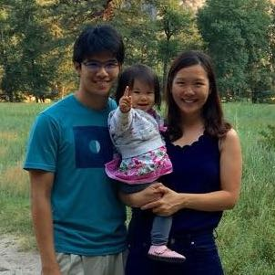

<table>
  <tr>
    <td width="25%">
      <div>
        
      </div>
    </td>
    <td>
      <div id="blurb">
	<p>I am a second-year PhD student with Stanford's <a target="_blank" href="https://statistics.stanford.edu/">Department of Statistics</a>.</p>
	<p>My past work experience has been with the Singapore Government. Most recently, I was a data scientist at IDA Singapore's Data Science Division (now under <a target="_blank" href="https://www.tech.gov.sg/">GovTech</a>), where I worked with various government agencies to analyze their data in suport of public policies and services. I also have previous experience in public policy with Singapore's <a target="_blank" href="http://www.mewr.gov.sg/">Ministry of the Environment and Water Resources</a> and Ministry of Defence.</p>
	<p>My wife runs a really cool blog titled <a target="_blank" href="https://techandpublicgood.com/">Technology and Public Good</a>, where she discusses how the tech, business and government sectors can work together to solve social challenges. Together, we have a beautiful daughter who never fails to make us laugh :)</p>
      </div><!-- /.blurb -->
    </td>
  </tr>
</table>
